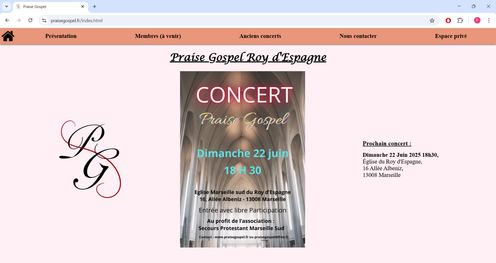
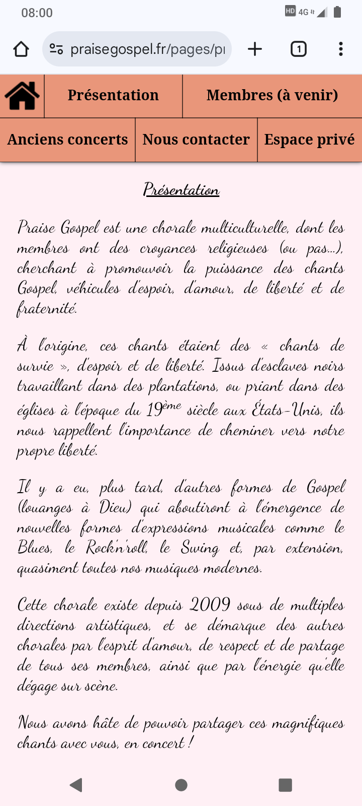
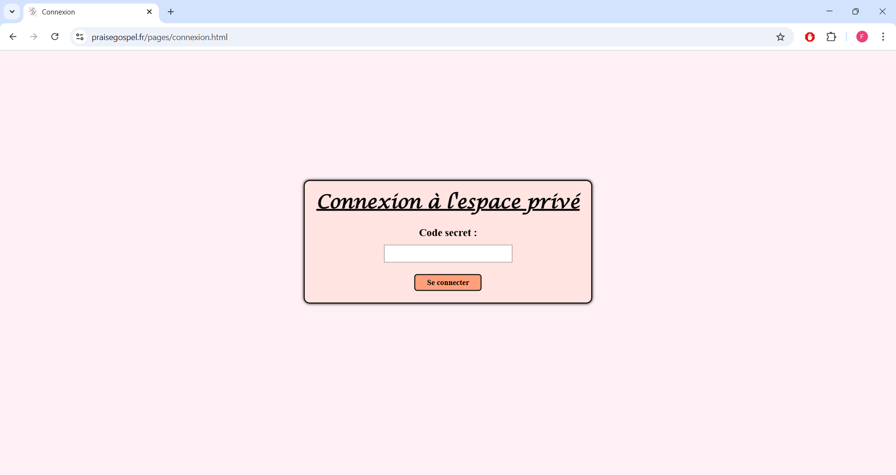

Illustrations :

Capture 1 :
Page d'accueil
Capture 2 :
Page d'accueil sur mobile

Capture 3 :
Page de présentation sur mobile
Capture 4 :
Page de présentation
Capture 5 :
Page des anciens concerts
Capture 6 :
Page des anciens concerts sur mobile
Capture 7 :
Page des contacts sur mobile
Capture 8 :
Page des contacts

Capture 9 :
Page de connexion à l'espace privé

Capture 10 :
Page de connexion sur mobile